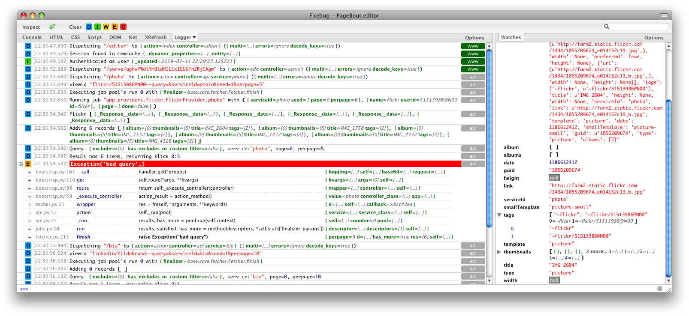
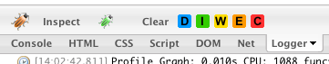
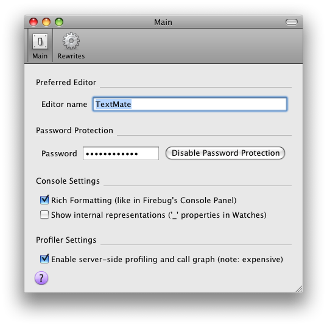
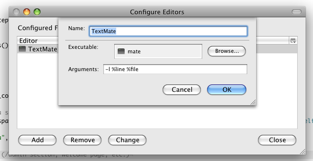
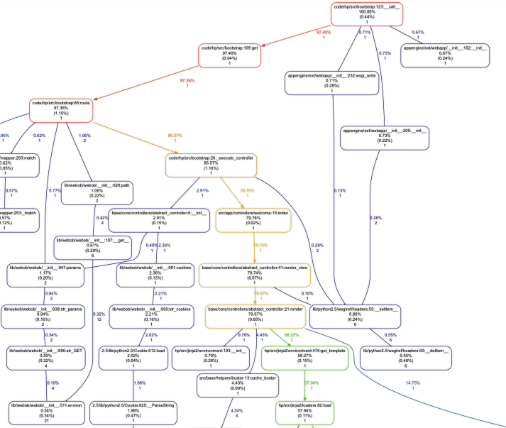
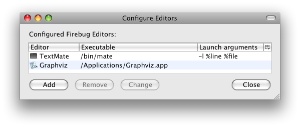
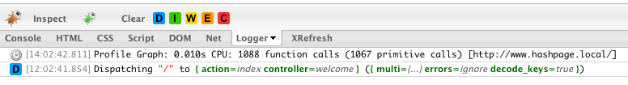

This article was written and submitted by an external contributor.
The Google App Engine team thanks Antonin Hildebrand for his time and expertise.
Antonin Hildebrand
March 2009
Logging in App Engine
Logging events is a helpful technique for application development. If you are new to App Engine
logging, you should read a detailed article about logging events in your Application.
Sometimes it is useful to see log events in realtime. A quick solution is
to use javascript logging console available in App Engine by simply adding
?debug parameter to the current url.

Unfortunately this method has some drawbacks:
- The javascript
console has to be injected into served page and may interfere with
actual page content. This may theoretically introduce javascript
libraries conflicts, CSS styling issues or unexpected DOM manipulation
issues.
- Logging is performed on server side and logging
events have to be sent to a client as part of served page content. This is
problematic in AJAX-style applications, where you want to see logging
events being made during AJAX requests, but there is no safe mechanism
how to send them back and process them on the client side.
- The javascript console is not very comfortable.
My motivation was to solve the issues with the javascript console. I prefer to
use Firefox and Firebug as a development platform for client-side code. My inspiration was the FirePHP project by Christoph Dorn. I've decided to write FirePython similar way.

FirePython is a server-side Python library, which hooks into standard Python logging module
and sends logging events to a client-side using response HTTP headers. On
the client-side there must be a browser extension which is capable to
present incoming logging events to the user. For this occasion I've
written an extension for Firefox called FireLogger (integrated into Firebug).
FirePython features
- does not interfere with served page content (uses HTTP headers instead)
- provides rich logging with deep parameter inspection
- displays intelligent exception backtrace
- supports profiling graphs
- enables search/filter functionality
- possibly opens original source file on the line with logging statement
- comes with middlewares for Django and WSGI applications
- enables password protection for production sites
FirePython setup with App Engine
Although FirePython was originally created for App Engine, it has no
App Engine specific dependencies. It may be used with almost any Python
server-side web framework which is capable to emit response headers.
Note: this setup instructions were valid for FirePython 0.4 and may be outdated. For latest details, please refer to the FirePython documentation.
Prerequisities:
- Firefox 2+, Firebug 1.2+, latest FireLogger on client side
- unpack firepython module into your app engine project, make sure it is on
sys.path
For WSGI you need to wrap your WSGI application with FirePythonWSGI:
Fix
from firepython.middleware import FirePythonWSGI
run_wsgi_app(FirePythonWSGI(Application()))
from firepython.middleware import FirePythonWSGI
run_wsgi_app(FirePythonWSGI(Application()))
End Fix
For Django you need to enable FirePythonDjango middleware:
MIDDLEWARE_CLASSES: firepython.middleware.FirePythonDjango
In case you use other framework, you basically have to:
- install FirePython handler into standard logging module
- invoke FirePython each time before you are about to send a response back to a client
FirePython emits buffered logs as HTTP response headers using
provided add_header function (this depends on your framework and for
inspiration you may look at FirePythonWSGI class).
Note: usually you want to enable DEBUG level logging in development mode:
logging.getLogger().setLevel(logging.DEBUG)
Advanced FirePython
FireLogger properties menu is available under green bug icon on Firebug Toolbar.

Password protection

You may set password to protect production site logs. Logs are sent
only when FireLogger is present on the client side and password matches
on both sides. Password is sent as a md5 hash in request headers, so
this is not very safe unless you are using https connection.
Alternatively, you may use App Engine's Users API to send logs only
when there is project admin logged in (see example in Bloog project).
Open Files in your text editor
Firebug has a feature called "External Editors" which enables you to
open source files in your favorite text editor. When you click on a
timestamp field of a log record, FireLogger takes the first configured
Firebug editor and tries to open original source file on the particular
line.
For example you may configure TextMate editor like this:

Note: On the production site, paths to
source files usually do not match paths on development machine. For
example App Engine production server stores uploaded projects under
generated folder names. You may want to use Rewrites preferences pane
to setup a remapping from production paths to development paths. You may
setup regular expression which strips production site prefix and
replaces it with development machine root folder path.
Python profiling

You may send profiling graphs from server-side to client and open them in .dot viewer.
- enable this feature in FireLogger preferences
- setup a editor in External Editors in Firebug called "Graphviz" (the name is important!). It should be path to executable of a viewer for .dot graphs.

- reload page and you should see info log line containing profiling info, clicking on the line launches configured Graphviz viewer (a filename will be passed as the first parameter)

Logger names
By default all log messages are logged using a default root logger.
You may create more loggers and use logger names to categorize log
events into related groups (see log record's right side in top
screenshot). To rename the root logger:
logging.getLogger().name = "my logger"
Refer to the standard Python logging module for more details.
FirePython proxy
This is an advanced feature, which enables you to republish
FireLogger logs coming from other servers on server-side. My scenario
was following:
- I had a FireLogger-enabled REST-full API server
- I had a classic FireLogger-enabled backend server, which generated HTML pages using queries to API server
The goal was to see log events from both servers. I've configured
classic server to republish logs from API server to correctly propagate them
to the client side.
If you are interested in details, you may read more about FireLogger protocol.
Known issues with App Engine
In production there are limits on maximum HTTP response size and
FirePython output may get truncated if gets too large. You may set firepython.DEEP_LOCALS = False if you want to reduce response sizes on production. Also decreasing firepython.JSONPICKLE_DEPTH reduces occurrence of this problem.
FirePython download
http://firepython.binaryage.com
FirePython and FireLogger are open-source projects. You are welcome to fork and contribute. Also thanks to all past contributors.
About the Author...
Antonin is a freelance developer from Czech Republic.
He works in BinaryAge and his personal mission is to help developers with their tools.
As a web developer, you may be interested in some other open-source
projects created by Antonin:
- FireRainbow -
brings javascript syntax highlighting into Firebug
- XRefresh - browser
refresh automation for web developers
- DryDrop - for hosting
static websites on GAE (versioned in GitHub and auto-published using
web hooks)


{kind=link}
{kind=link}
{kind=link}
{kind=link}
{kind=link}
{kind=link}
{kind=link}